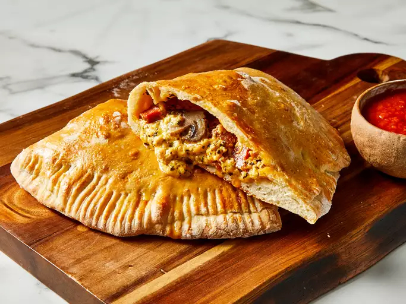

Real Italian Calzones

Italian Calzones made using the original method.
Ingredients
- 1 (.25 ounce) package active dry yeast
- 1 cup warm water
- 1 tablespoon olive oil
- 1 teaspoon white sugar
- 1 teaspoon salt
- 2 1/2 cups all-purpose flour, plus more for dusting
- 1 teaspoon olive oil
- 1 large egg, beaten
- 1 1/2 cups shredded Cheddar cheese
- 1/2 cup ricotta cheese
- 1/2 cup diced pepperoni
- 1/2 cup sliced fresh mushrooms
- 1 tablespoon dried basil leaves
Steps
- Make dough: Dissolve yeast in warm water in a mixing bowl; let sit until foamy, about 5 minutes. Add 1 tablespoon oil, sugar, and salt; mix in 1 cup flour until smooth. Gradually stir in remaining flour until dough is smooth and workable.
- Turn dough out onto a lightly floured surface. Knead dough until it is elastic, about 5 minutes. Place 1 teaspoon olive oil in a large bowl; lay dough in the bowl and flip to coat with oil. Cover and let rise until almost doubled in size, about 40 minutes.
- Meanwhile, make the filling: Combine Cheddar cheese, ricotta cheese, pepperoni, mushrooms, and basil leaves in a medium bowl. Mix well, cover, and refrigerate to chill.
- Preheat the oven to 375 degrees F (190 degrees C). Grease a baking sheet.
- Punch down dough; divide into 2 equal pieces. Roll each piece out on a lightly floured surface into 1/8-inch-thick circles. Fill each circle with 1/2 of the cheese and meat filling.
- Fold dough over filling to make a semicircle. Press edges down with the tines of a fork to seal. Brush the top of each calzone with beaten egg and place on the prepared baking sheet.
- Bake in the preheated oven until golden brown, about 30 minutes. Serve hot.
Home